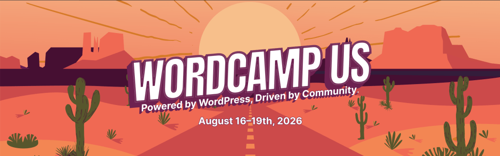

WordPress 7.0.3リリース
2026年8月7日 ／ Development、Releases、Security
以下は WordPress.org 公式ブログの記事「WordPress 7.0.3 Release」を訳したものです。
誤字脱字誤訳などありましたらフォーラムまでお知らせください。
WordPress 7.0.3を利用できます。
WordPress 7.0.3がリリースされました。このバージョンでは、いくつかのセキュリティ修正が行われています。セキュリティリリースであるため、お使いのサイトを直ちに更新することをお勧めします。
WordPress 7.0.3への更新は、WordPress.org からダウンロードするか、サイトのダッシュボード→「更新」にアクセスして「今すぐ更新」をクリックすることで行えます。自動バックグラウンド更新に対応しているサイトでは、まもなく更新が開始されます。
詳細については、WordPress 7.0.3 HelpHub サイトをご覧ください。
このリリースに含まれるセキュリティ更新
セキュリティチームは、脆弱性を責任ある形で報告していただき、本リリースでの修正につながった以下の皆さんに感謝いたします:
- pwn.ai のチームから報告された、ログイン画面における認証前の反射型クロスサイトスクリプティング (XSS) で、PHP コードの実行につながる可能性がありました。
- 寄稿者権限以上: 絵文字設定要素を介した投稿内の保存型クロスサイトスクリプティング (XSS)。Asaf Mozes 氏 (amosec) より報告されました。
- 寄稿者権限以上: 投稿コンテンツブロック内の保存型クロスサイトスクリプティング (XSS)。n05ec 氏より報告されました。
- 寄稿者権限以上: ユーザー数が非常に多いサイトにおいて、「クイック編集」機能に保存型クロスサイトスクリプティング (XSS) の脆弱性が存在しました。報告者: Naveen S 氏および Ajmal Moochingal 氏
- 寄稿者権限以上: 「投稿日」ブロックに保存型クロスサイトスクリプティング (XSS) の脆弱性が存在しました。報告者: WordPressセキュリティチームの Alex Concha 氏
- ユーザー登録が有効なマルチサイトネットワークにおける権限昇格の脆弱性により、ユーザーが新しいサイトを作成できてしまう問題が発生しました。報告者: Aikido Security
- WordPress セキュリティチームの Ehtisham Siddiqui 氏により報告された、パスワード保護された投稿のコメントを漏洩させる「最新のコメント」ブロックにおける情報漏洩の問題
- HDWSec 氏により報告された、投稿スラッグの列挙
- Elio Gubser 氏により報告された、コメントフィードにおけるメモの漏洩
- Anthropic により報告された、安全な CSS 属性フィルターのバイパスを介した投稿者権限以上 の CSS インジェクション
- 0ways 氏により報告された、メールアドレスの確認フローのバイパス
- URL 検証におけるサーバーサイドリクエストフォージェリ (SSRF) の問題により、リンクローカル範囲へのリクエストが可能となる。報告者: Andrew Mohawk 氏および複数の独立した報告者
バックポート
これらの修正は、必要に応じて、セキュリティ修正の適用対象となるすべてのブランチ (現在は4.7まで) に任意の対応としてバックポートされています。念のため申し上げますが、公式にサポートされているのは WordPress の最新バージョンのみです。バックポート作業は現在進行中で、準備が整い次第順次リリースされます。
また、該当するすべての修正は WordPress 7.1 RC2 に含まれます。
CVE および GHSA の参照情報
ログイン画面の XSS 脆弱性の詳細については、以下のアドバイザリをご覧ください: CVE-2026-64638 / GHSA-52p2-r8wf-jcrf
WordPress コントリビューターの皆さんに感謝
今回のリリースは、John Blackbourn がリードしました。加えて以下の方々の多大な貢献により、WordPress 7.0.3をリリースすることができました: Aaron D. Campbell, Aaron Jorbin, Adam Silverstein, adrianmoldovanwp, Aki Hamano, Alex Concha, Andrew Duthie, Andrew Serong, annezazu, Barry, Bernie Reiter, Daniel, Daniel Richards, David Biňovec, Dennis Snell, Ehtisham Siddiqui, Erwan Le Rousseau, Fabian Kaegy, fiocavallari, George Mamadashvili, gubser, Isabel Brison, Jarda Snajdr, Jb Audras, Jeremy Felt, Joe Dolson, Joe Hoyle, John Blackbourn, Jon Surrell, Jonathan Desrosiers, Khokan Sardar, Lance Willett, lucasbustamante, lucatume, Marco Ciampini, Marin Atanasov, Mohammad Jangda, Mukesh Panchal, Paul Kevan, Peter Wilson, ramonopoly, SergeyBiryukov, vortfu, Weston Ruter

8月16日から19日にかけて開催される WordCamp US 2026で、WordPress 7.1のリリースイベントにぜひご参加ください。
協力者: @sysbird, @atachibana, @toru, @torikumo